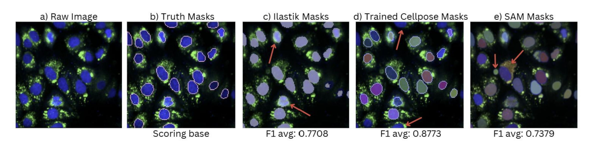

Cellular Segmentation
My Signature Work Project
Introduction
My Signature Work benchmarked multiple state-of-the-art segmentation software using my own confocal microscopy images of HeLa cells stained with hoechst and BODIPY
Abstract
This study focuses on optimizing the efficiency of image analysis in scientific research through three main deliverables: an assessment of existing cellular segmentation software, an original web-based application for segmentation visualization, and a fine-tuned vision language model, BLIP-2. Several segmentation software were assessed through a benchmark analysis of segmentation accuracy following a literature review and a qualitative analysis to ultimately select Cellpose for integration with the web-based application. This user-friendly web graphical user interface (GUI) responds to user input to view image files by selecting pre-identified regions of interest (ROI) and corresponding extraction of features. This study establishes a recommended pipeline for segmenting masks with Cellpose for pixel-wise, accurate segmentation and highlighting ROIs with tools provided by the web-application. The fine-tuned BLIP-2 model utilizes its multimodal translational capabilities to enable subsequent automated captioning on a large set of images. This transformation into language data will allow any large language model (LLM) to identify patterns within the image set. This comprehensive pipeline traces the transformation of raw image data into processed language formats, leveraging the strengths of deep learning algorithms. This will provide biological research scientists with an efficient method for identifying trends in complex datasets without the need of unpacking data with complex software coding.
